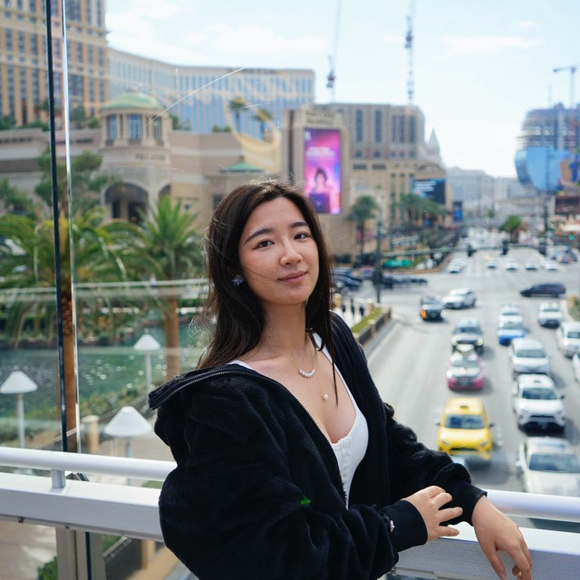

xu.hu@utdallas.edu · huxu896@gmail.com
Google Scholar · GitHub · Richardson, TX, USA

I'm a Ph.D. student in Computer Science at the University of Texas at Dallas from 2025. My research focuses on computer-use agents and AI safety — building agents that automate computer work and understanding how to make them trustworthy and reliable.
Before UT Dallas, I earned my B.S. in Statistics from Anhui University in 2025, where I ranked 1st in my major. I've been fortunate to do research at the TReNDS Lab in Georgia Tech (ECE) with Vince D. Calhoun, at NC State (ISE) with Xiaolei Fang and Shu-Cherng Fang, and at HKUST (Guangzhou) with Yuxuan Liang and Zhengyang Zhou.